Always Dope.Never Basic.
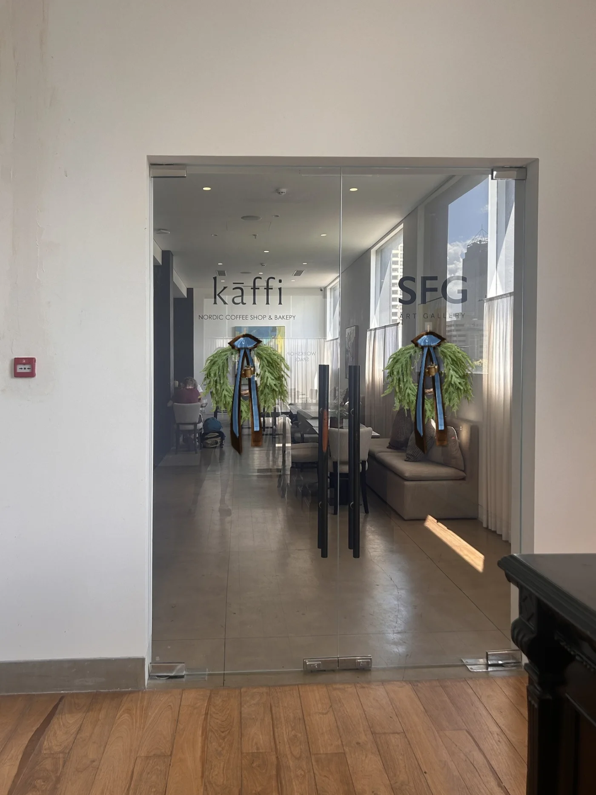
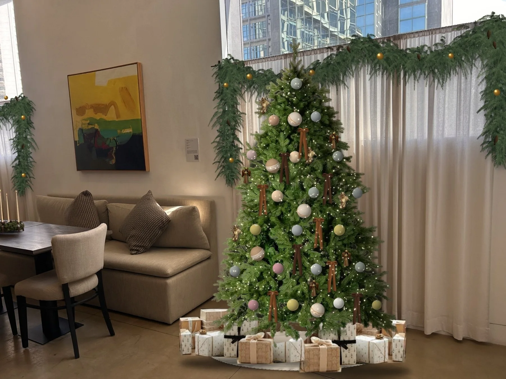
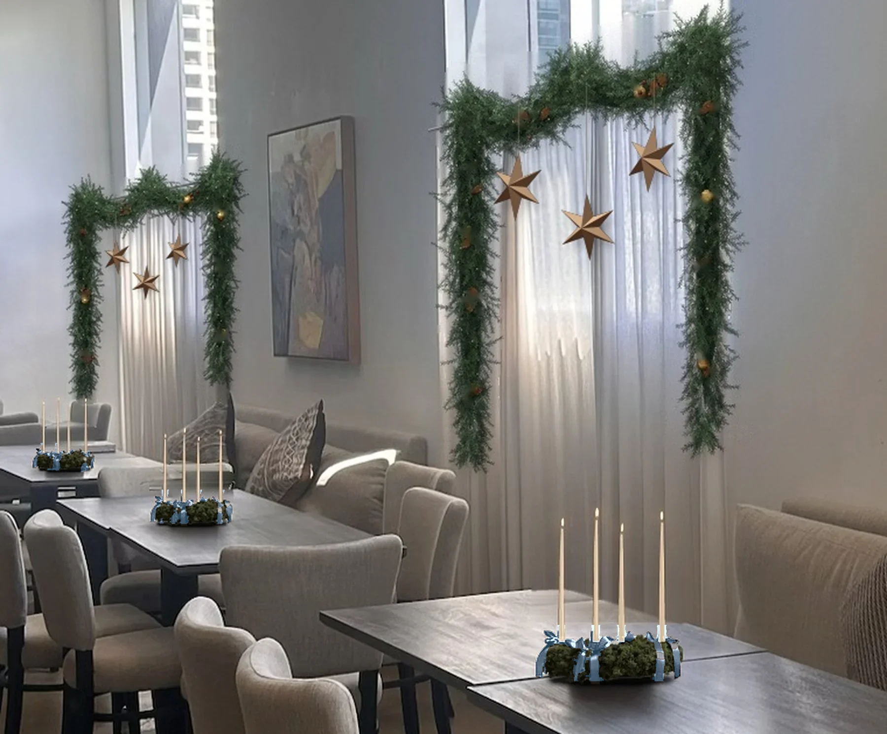
Option two: the same set-up with chocolate velvet ribbon on the centrepieces.
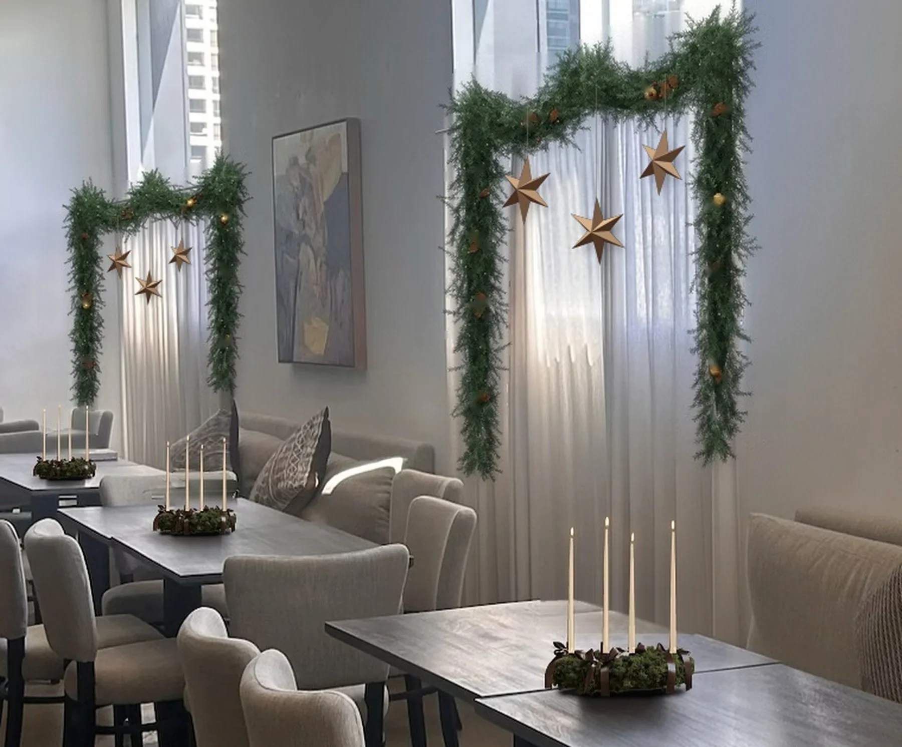
If moss is not available in the quantity needed, below is the alternative table centrepiece.
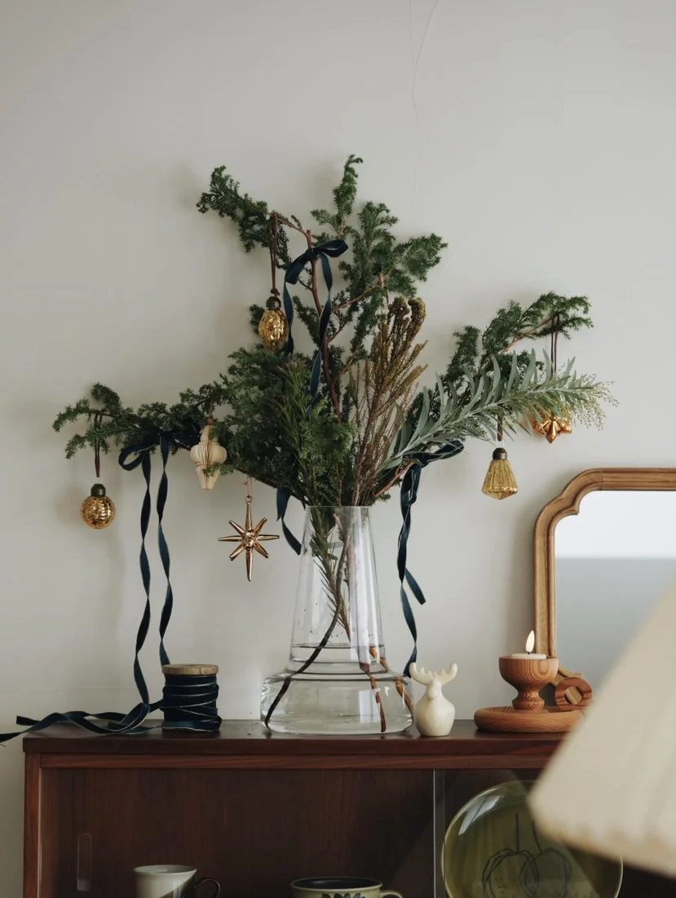
Reference image only, for inspiration.
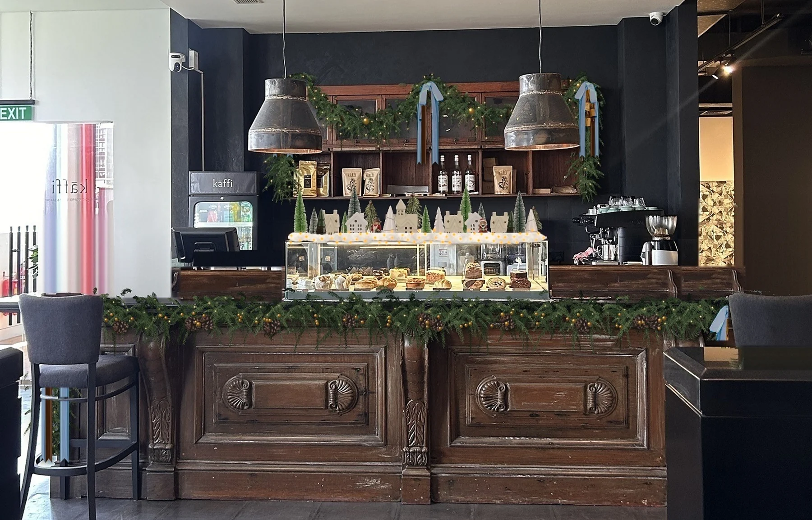
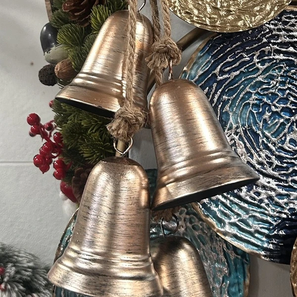
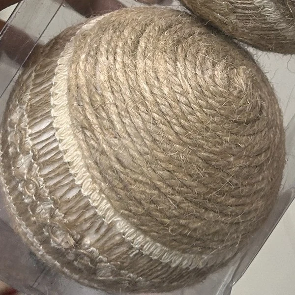
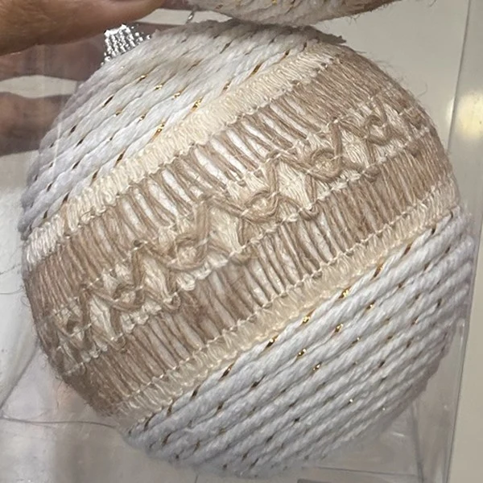
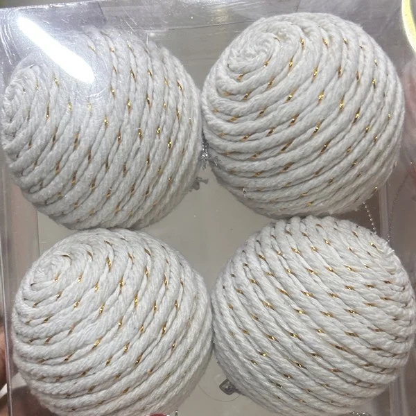
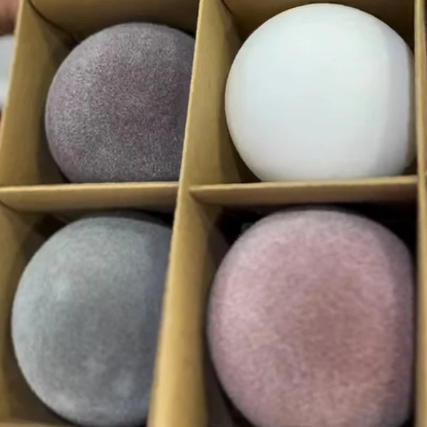
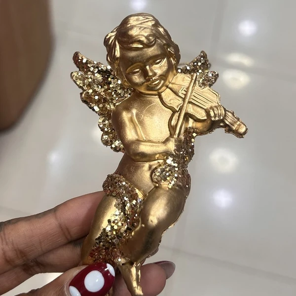
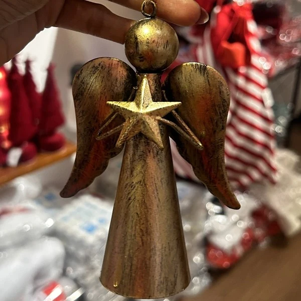
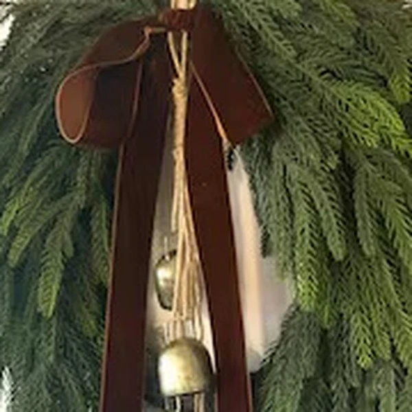
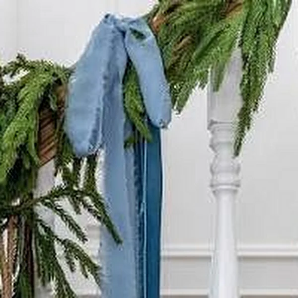
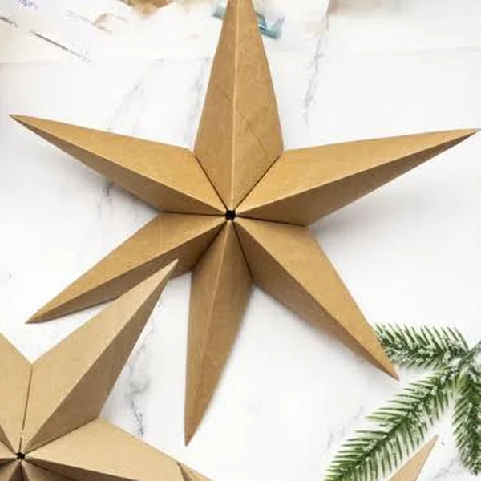
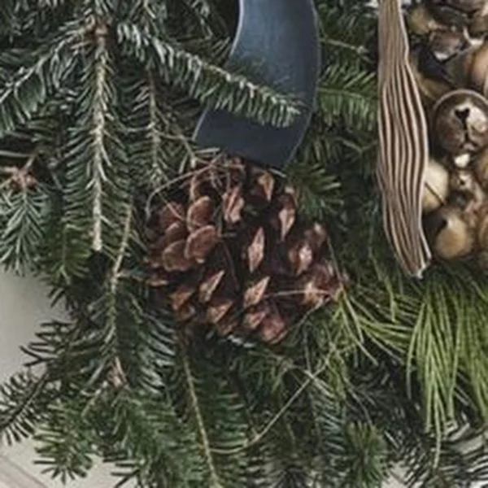
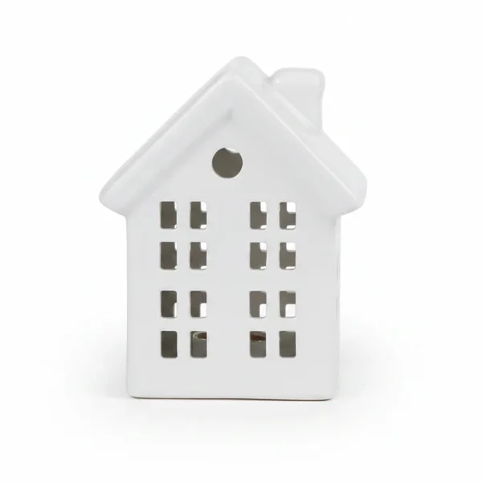
© 2026 Dope Deco, a brand of Cranial (Pvt) Ltd. All rights to this design belong to Dope Deco. It is shared for viewing only by the person it was sent to, and may not be copied, shared or reproduced without our written permission.